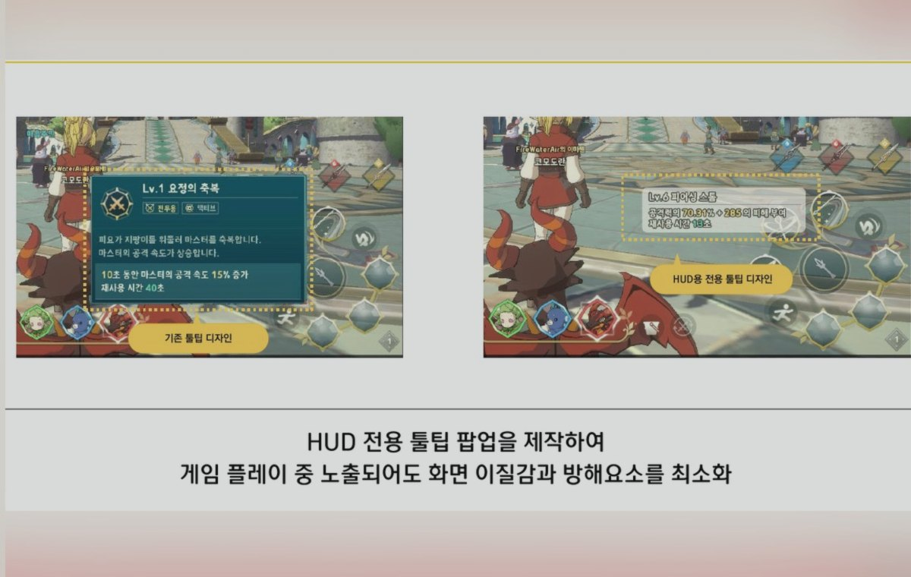
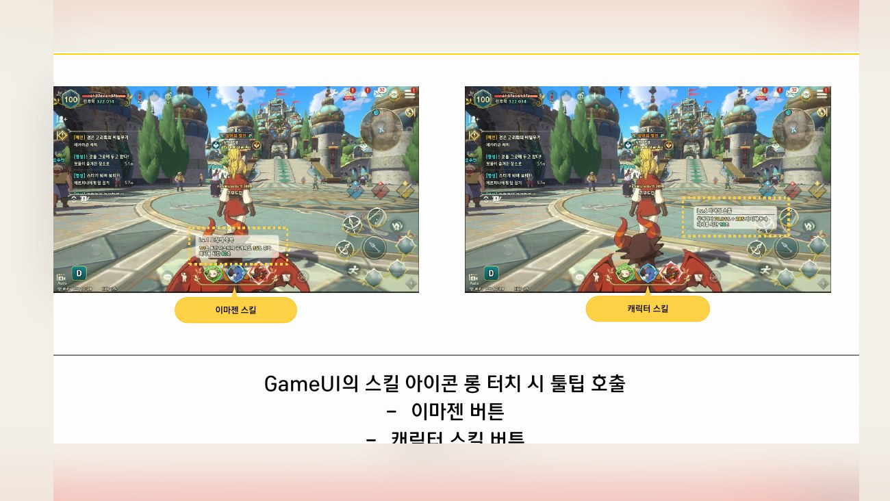
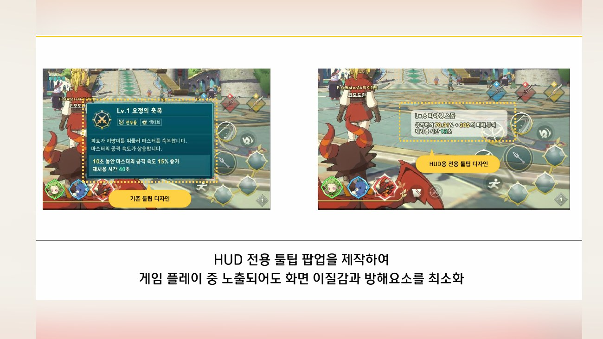
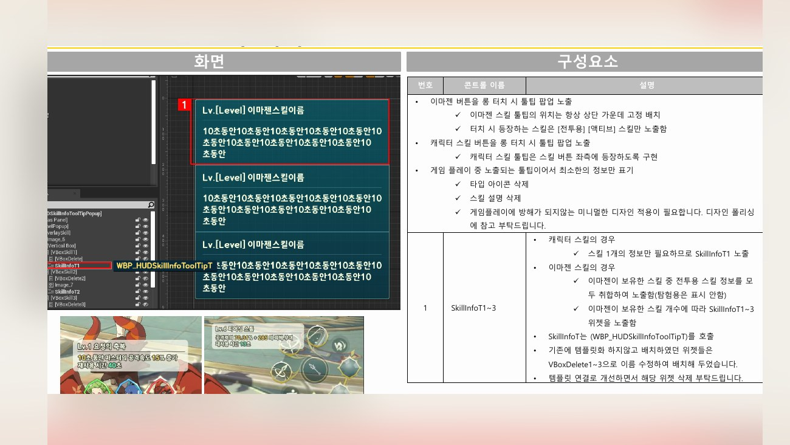
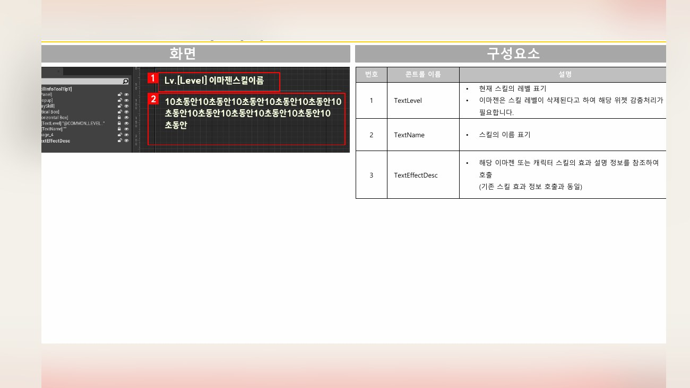

Planning Context
어떤 기획이었나
- 전투 중 HUD는 조작 밀도가 높아 스킬 설명이 과하면 방해가 되고, 부족하면 판단에 필요한 정보가 빠집니다.
- 스킬 정보는 전투 흐름을 끊지 않는 방식으로 짧고 명확하게 보여줘야 했습니다.
ProjectN · HUD UX
전투 HUD에서 스킬 정보를 빠르게 확인할 수 있도록 툴팁 노출과 정보 구조를 정리한 UX 사례입니다.

Planning Context
Process
Deliverables
Result
전투 흐름을 방해하지 않으면서 스킬 정보를 확인할 수 있도록 HUD 툴팁 UX를 정리했습니다.
Deliverable Captures
원본 문서는 포함하지 않고, 포트폴리오 확인용으로 일부 페이지만 이미지화했습니다. 슬라이드 마스터/상하단 영역은 흐림 처리했습니다.



